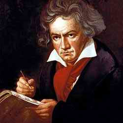

42 LUDWIG VAN BEETHOVEN 1770-1827
Raja
di raja pencipta musik Ludwig van Beethoven keluar jadi
jabang bayi tahun 1770 di kota Bonn, Jerman. Semasa
kanak-kanak sudah tampak jelas bakat musiknya yang luar
biasa dan buku musik ciptaannya muncul pertama kali tahun
1783. Di usia remaja dia berkunjung ke Wina dan
diperkenalkan kepada Mozart tetapi perjumpaan keduanya
berlangsung singkat. Tahun 1792 Beethoven kembali ke Wina
dan sebentar dia belajar musik dengan Haydn yang kala itu
pencipta musik Wina kesohor (Mozart mati setahun
sebelumnya). Beethoven menetap di Wina, Mekkahnya musik
waktu itu, selama sisa hidupnya. Rasa musik Beethoven yang
tinggi selaku pemain piano mengesankan tiap pendengamya dan
dia berhasil baik selaku pemain maupun guru. Segera dia
menjadi pencipta musik yang produktif juga. Karyanya dapat
sambutan baik. Sejak umur pertengahan dua puluhan ke atas,
dia sudah mampu menerbitkan dan menjual buku ciptaan
musiknya tanpa kesulitan apa pun.
Ketika Beethoven berumur di ujung dua puluhan,
tanda-tanda ketuliannya mulai tampak. Tak pelak lagi gejala
ini amat merisaukan si komponis muda. Tuli buat seorang
pencipta musik betul-betul suatu malapetaka. Suatu ketika
timbul keinginannya mau bunuh diri saja.
Tahun-tahun antara 1802-1815 sering dianggap masa
pertengahan karier Beethoven. Pada masa istirahat itu,
akibat ketuliannya menghebat, dia mulai mundur dari
pergaulan masyarakat. Ketunarunguannya ini membuat orang
punya kesan tidak yakin bahwa Beethoven memang betul-betul
anti manusia, anti masyarakat, benci bergaul. Dia terlibat
dengan percintaan yang kerap dengan gadis-gadis muda tetapi
tampaknya semua hubungan ini berakhir tak bahagia dan tak
pernah beristeri.
Karya musik Beethoven sendiri menggila produktifnya.
Tahun-tahun terus berjalan namun perhatian yang diterimanya
makin lama makin susut yang mestinya populer buat seorang
komponis seperti dia di jaman itu. Tetapi, kesuksesannya
menanjak terus.
Pada usia empat puluhan Beethoven menjadi seratus persen
pekak. Akibatnya, dia tak pernah lagi tampil di muka umum
dan semakin menjauhi masyarakat. Hasil karyanya semakin
sedikit dan semakin sulit di fahami. Sejak itu dia mencipta
terutama buat dirinya sendiri dan beberapa pendengar yang
punya ideal masa depan. Dia pernah bilang kepada seorang
kritikus musik, "Ciptaanku ini bukanlah untukmu tetapi untuk
masa sesudahmu."
Ini merupakan ironi yang kejam dari sebuah nasib bahwa
seorang komponis paling berbakat sepanjang jaman harus
tertimpa musibah ketulian semacam itu. Kalau saja Beethoven
dengan kekuatan tekad non-manusiawi -- dalam ketuliannya
itu-- terus tetap menjaga mutu komposisi musiknya, ini akan
merupakan hal yang memukau dan brilian. Tetapi, kenyataan
lebih mengherankan lagi ketimbang yang dibayangkan dalam
masa tahun-tahun ketulian totalnya, Beethoven melakukan
ciptaan tidak sekedar setarap dengan apa yang dihasilkan
sebelumnya, melainkan umumnya dianggap merupakan hasil karya
terbesarnya. Dia meninggal di Wina tahun 1827 pada usia lima
puluh tujuh tahun.
Karya Beethoven yang banyak itu termasuk 9 simfoni, 32
sonata piano, 5 piano concerto, 10 sonata untuk piano dan
biola, serangkaian kuartet gesek yang menakjubkan, musik
vokal, musik teater, dan banyak lagi. Tetapi, yang lebih
penting dari jumlah ciptaannya adalah segi kualitasnya.
Karyanya merupakan kombinasi luar biasa dari kedalaman
perasaan dengan kesempurnaan tata rencana. Beethoven
memperagakan bahwa musik instrumental tak bisa lagi dianggap
cuma punya nilai seni nomor dua. Ini dibuktikan dari
komposisi yang disusunnya yang telah mengangkat musik
instrumental itu ke tingkat nilai seni yang amat tinggi.
Naskah asli Ludwig van Beethoven.
Beethoven benar-benar seorang pencipta orisinal yang
jempolan dan banyak perubahan-perubahan yang dilakukan dan
diperkenalkannya mempunyai pengaruh yang abadi. Dia
memperluas ukuran sebuah orkestra. Dia menambah panjangnya
simfoni dan memperluas daya jangkaunya. Dengan
mendemonstrasikan kemungkinan yang hampir tak terbatas yang
bisa dihasilkan oleh piano, dia membantu menjadikan piano
itu instrumen musik yang paling terkemuka. Beethoven membuka
babak transisi dari musik klasik ke musik bergaya romantik
dan karyanya merupakan sumber ilham untuk gaya romantik.
Dia menanamkan daya pengaruh yang menghunjam pada diri
komponis-komponis yang muncul belakangan, termasuk
tokoh-tokoh yang memiliki gaya berbeda seperti Brahms,
Wagner, Schubert dan Tchaikovsky. Dia juga merintis jalan
buat Berlioz, Gustav Mahler, Richard Strauss dan banyak lagi
lainnya.
Nyata benar, Beethoven mesti ditempatkan di atas musikus
mana pun dalam daftar urutan buku ini. Meski Johann
Sebastian Bach nyaris punya keistimewaan setara, karya
Beethoven lebih luas dan lebih sering didengar ketimbang
ciptaan Bach. Lebih dari itu, sejumlah penyempurnaan yang
dilakukan Beethoven lebih punya pengaruh mendalam terhadap
perkembangan musik selanjutnya ketimbang hasil karya
Bach.
Secara umum, ide etik dan politik lebih gampang
dijabarkan dengan kata-kata daripada musik dan
kesusasteraan. Punya ruang lingkup pengaruh yang lebih luas
dari pada musik. Atas dasar pertimbangan inilah Beethoven
--meski tokoh jempolan dalam sejarah musik-- ditempatkan
dalam urutan lebih rendah ketimbang Shakespeare. Dalam hal
membandingkan antara Beethoven dan Michelangelo, saya amat
terpengaruh dengan kenyataan bahwa umumnya orang lebih
banyak gunakan waktu mendengarkan musik daripada memandang
lukisan atau patung pahatan, dan atas dasar alasan ini pula
saya pikir komponis-komponis musik umumnya lebih berpengaruh
dibanding pelukis atau pemahat yang kemasyhurannya dalam
lapangan masing-masing setara. Walhasil, tampaknya cukup
layak menempatkan Beethoven pada urutan antara Shakespeare
dan Michelangelo.
|